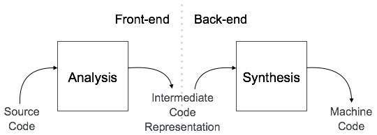
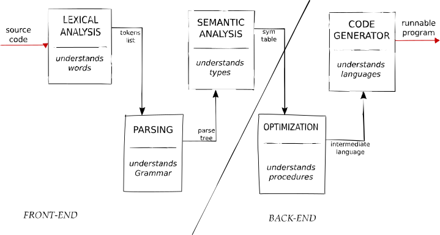

Introduction
Un Compilateur, quèsaco ?
En bref, un compilateur est un programme qui prend un code (par exemple un code écrit en C) et le transforme en un autre code (par exemple un code en langage machine (binaire)). Il en existe de très nombreux, pour de nombreux langages de programmation différents comme:
"En informatique, un compilateur est un programme qui transforme un code source en un code objet. Généralement, le code source est écrit dans un langage de programmation (le langage source), il est de haut niveau d'abstraction, et facilement compréhensible par l'humain. Le code objet est généralement écrit en langage de plus bas niveau (appelé langage cible), par exemple un langage d'assemblage ou langage machine, afin de créer un programme exécutable par une machine."
- gcc pour le C
- javac pour le Java
- ghc pour le Haskell
- et bien d'autres...
La Séparation Front/Back
Un compilateur est généralement séparé en deux parties:
- Le Frontend
- Le Backend
Le Frontend est la partie du compilateur qui s'occupe de la lecture du code source, de l'analyse de sa syntaxe et de sa sémantique. C'est cette partie qui va vérifier que le code source est correct, et le transformer en une représentation intermédiaire (par exemple un arbre de syntaxe abstrait (AST)). C'est cette représentation intermédiaire qui sera utilisée par le Backend pour générer le code objet.
Nous nous occuperons ici du Frontend, la partie s'interressant au Backend est disponible ici.
Les Étapes du Frontend
Lecture du Code Source
La première étape du Frontend est la lecture du code source. Cette étape consiste à lire le code source, caractère par caractère, et à le transformer en une suite de tokens. Ces tokens sont des éléments lexicaux, c'est-à-dire des éléments de base du langage (par exemple des mots-clés, des identifiants, des nombres, des opérateurs, etc...). Par exemple, pour le code C suivant:
#include <stdio.h>
int main(int argc, char** argv) {
printf("Hello, World!\n");
return 0;
}
PreProcInst Name: include Value: <stdio.h>
Keyword Name: int
Identifier Name: main
Punctuator Name: (
Keyword Name: int
Identifier Name: argc
Punctuator Name: ,
Keyword Name: char
DoublePointer Name: **
Identifier Name: argv
Punctuator Name: )
Punctuator Name: {
Keyword Name: printf
Punctuator Name: (
String Name: "Hello, World!\n"
Punctuator Name: )
Punctuator Name: ;
Keyword Name: return
Numeric Name: 0
Punctuator Name: ;
Punctuator Name: }
Analyse Syntaxique
La deuxième étape du Frontend est l'analyse syntaxique. Cette étape consiste à analyser la syntaxe du code source, c'est-à-dire à vérifier que le code source est correct par rapport à la grammaire du langage. Par exemple, pour le code C suivant:
#include <stdio.h>
int main(int argc, char** argv) {
printf("Hello, World!\n");
return 0;
}
PreProcInstruction
| Include
| | String: <stdio.h>
FunctionDeclaration
| TypeSpecifier: int
| Identifier: main
| ParameterList
| | ParameterDeclaration
| | | TypeSpecifier: int
| | | Identifier: argc
| | ParameterDeclaration
| | | TypeSpecifier: char
| | | Pointer: *
| | | Pointer: *
| | | Identifier: argv
| CompoundStatement
| | ExpressionStatement
| | | FunctionCall
| | | | Identifier: printf
| | | | ArgumentList
| | | | | String: "Hello, World!\n"
| | ReturnStatement
| | | Numeric: 0
Analyse Sémantique
La troisième étape du Frontend est l'analyse sémantique. Cette étape consiste à analyser la sémantique du code source, c'est-à-dire à vérifier que le code source est correct par rapport à la sémantique du langage. Par exemple, pour le code C suivant:
#include <stdio.h>
int main(int argc, char** argv) {
printf("Hello, World!\n");
return 0;
}
- la fonction printf est bien déclarée (ici dans l'import de la librairie stdio)
- la fonction printf est bien appelée avec les bons arguments
- la fonction main est bien déclarée
- la fonction main est bien déclarée avec les bons arguments
- la fonction main est bien déclarée avec le bon type de retour
- la fonction main est bien déclarée avec le bon type de paramètres